179 DevTools Tips
-
Find inactive CSS styles
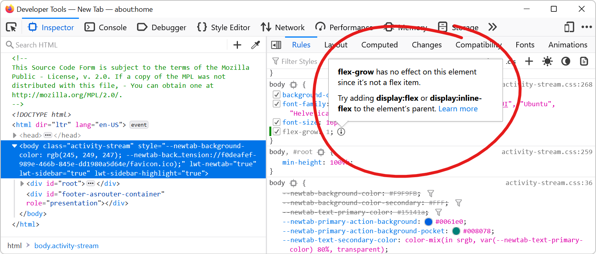
Sometimes we write CSS code that's entirely valid but has absolutely no effect at all, and this can be frustrating. Indeed, there are many cases where a CSS declaration has no effect on an element. On... Read more
-
Get the recently selected DOM nodes in the console
 If you type $0 in the Console tool, in any browser, the currently selected DOM node is returned. This is very handy. To learn more, check Get the selected element in the console. On top of this, in Ed... Read more
If you type $0 in the Console tool, in any browser, the currently selected DOM node is returned. This is very handy. To learn more, check Get the selected element in the console. On top of this, in Ed... Read more -
Inspect CSS animations
 Modern browser DevTools provide a handy tool to inspect and modify CSS animations, CSS transitions, and Web animations. These tools not only help you debug animations, but also let you modify the vari... Read more
Modern browser DevTools provide a handy tool to inspect and modify CSS animations, CSS transitions, and Web animations. These tools not only help you debug animations, but also let you modify the vari... Read more -
Remove annoying page overlays and other elements
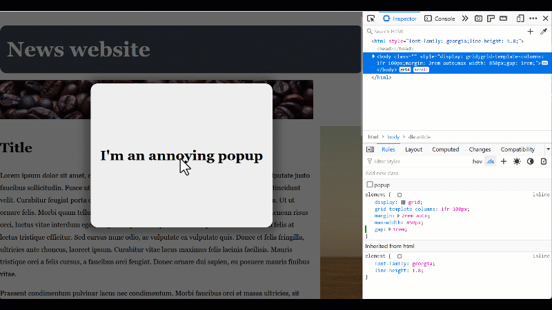
A lot of websites these days get covered with overlays and crammed with lots of ads and other things that make it hard to just read the content of the page. To get rid of an annoying overlay, or any o... Read more
-
Copy CSS selector of an element
 To uniquely identify an element that lacks an identifier, so that you can reference the element in JavaScript and other places, use DevTools' ability to copy unique CSS selectors. All DevTools have th... Read more
To uniquely identify an element that lacks an identifier, so that you can reference the element in JavaScript and other places, use DevTools' ability to copy unique CSS selectors. All DevTools have th... Read more -
Copy an element's JavaScript path
 JavaScript often needs references to DOM nodes on the page. Getting a reference is sometimes easy with document.getElementById() or similar. Other times however, a more complicated CSS selector needs... Read more
JavaScript often needs references to DOM nodes on the page. Getting a reference is sometimes easy with document.getElementById() or similar. Other times however, a more complicated CSS selector needs... Read more -
Jump from a label `for` attribute to the linked input (and more)
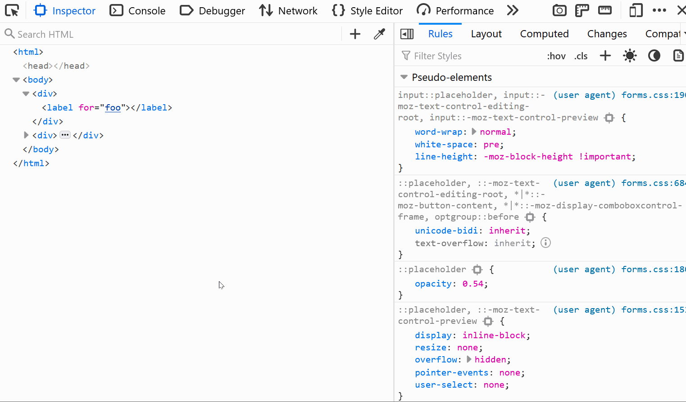
In HTML, it's possible for certain attributes to reference other elements by their IDs. For example, a <label>'s for attribute can be used to link the label to the input it's associated with: &l... Read more
-
Fix color contrast issues using the element tooltip
 There are multiple ways to detect and fix color contrast issues with DevTools, but here is a nice one to keep in mind. It's not straightforward to use and takes a few steps, but makes it very nice to... Read more
There are multiple ways to detect and fix color contrast issues with DevTools, but here is a nice one to keep in mind. It's not straightforward to use and takes a few steps, but makes it very nice to... Read more -
Empty the cache and hard refresh
 Here is a nice tip to quickly empty your cache and refresh the page, in order to test new code changes: In Chrome, or Edge, open DevTools (F12). This step is not needed for Polypane. Right-click on t... Read more
Here is a nice tip to quickly empty your cache and refresh the page, in order to test new code changes: In Chrome, or Edge, open DevTools (F12). This step is not needed for Polypane. Right-click on t... Read more -
Quickly spot out-of-viewport elements
 Sometimes, either by accident or on purpose, HTML elements end up outside of the visible browser viewport. When they do, it can be really hard to find them in DevTools. Indeed, the DOM tree in the Ele... Read moreCategories: Supported by:
Sometimes, either by accident or on purpose, HTML elements end up outside of the visible browser viewport. When they do, it can be really hard to find them in DevTools. Indeed, the DOM tree in the Ele... Read moreCategories: Supported by: -
Edit an element's attributes and tag name with the keyboard
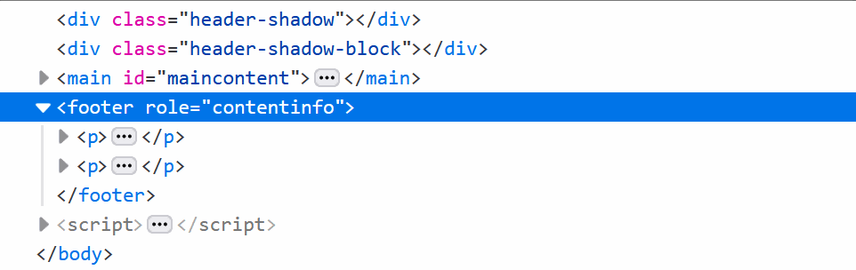
Using the keyboard can be faster than using a mouse in certain cases (and for some people). One such case is editing an element's tag name and attributes in DevTools. To do this, select an element in... Read more
-
Create your own simulated devices
 You can simulate various different devices from DevTools, to get an idea of how your webpage might render on those devices (note that this is only a simulation, the tool only changes the screen dimens... Read more
You can simulate various different devices from DevTools, to get an idea of how your webpage might render on those devices (note that this is only a simulation, the tool only changes the screen dimens... Read more -
Discover all the tools
 DevTools is confusing! There's so much functionality packed in such a small UI. Did you know that Chrome DevTools had more than 30 individual tools! Yes, that's right, 30. It's hard for both new users... Read more
DevTools is confusing! There's so much functionality packed in such a small UI. Did you know that Chrome DevTools had more than 30 individual tools! Yes, that's right, 30. It's hard for both new users... Read more -
Copy an elements styles
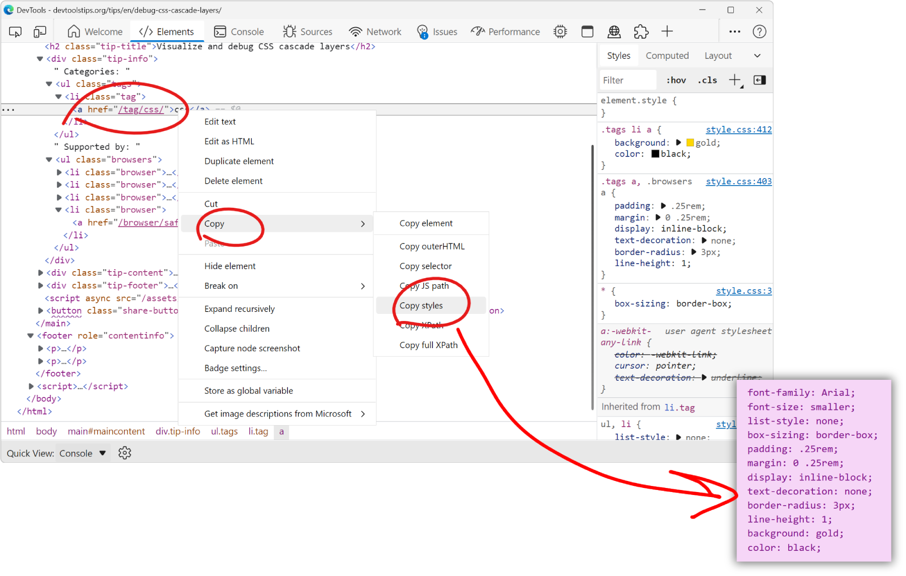
You can extract all the styles of an element in one go by using the Copy styles feature. No need to go through all CSS rules and properties that apply to the element in the Styles pane, and manually b... Read more
-
Use document.designMode to spell check your webpage
 Amelia Bellamy-Royds shared a really cool tip to spell-check a webpage's content from DevTools: Open DevTools, and go to the Console tool. Type document.designMode = "on" and press Enter. C... Read more
Amelia Bellamy-Royds shared a really cool tip to spell-check a webpage's content from DevTools: Open DevTools, and go to the Console tool. Type document.designMode = "on" and press Enter. C... Read more -
Visualize and debug CSS cascade layers
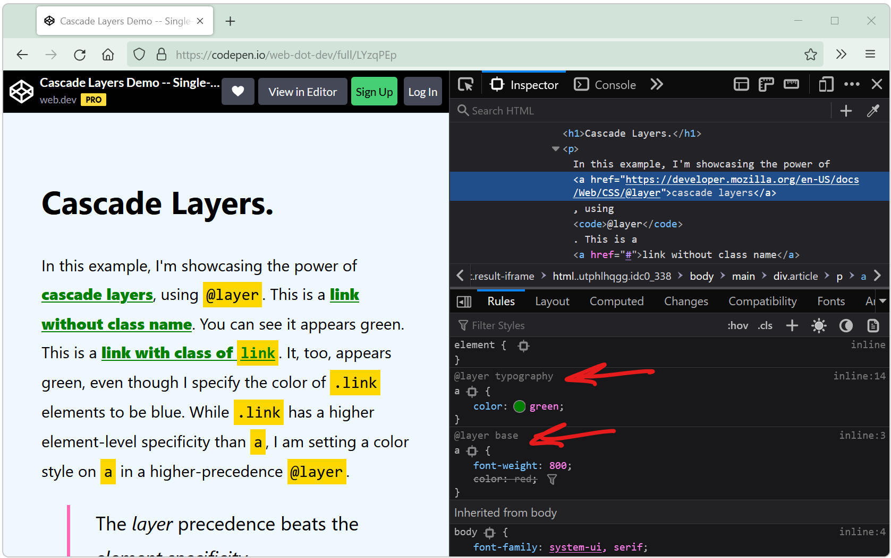
Cascade layers is a CSS feature that allows web developers to define their CSS styles in multiple layers and control the order in which these layers apply. Cascade layers are meant to bring an elegant... Read more
-
Automatically get issues your site has with performance, accessibility, security, compatibility, and others.
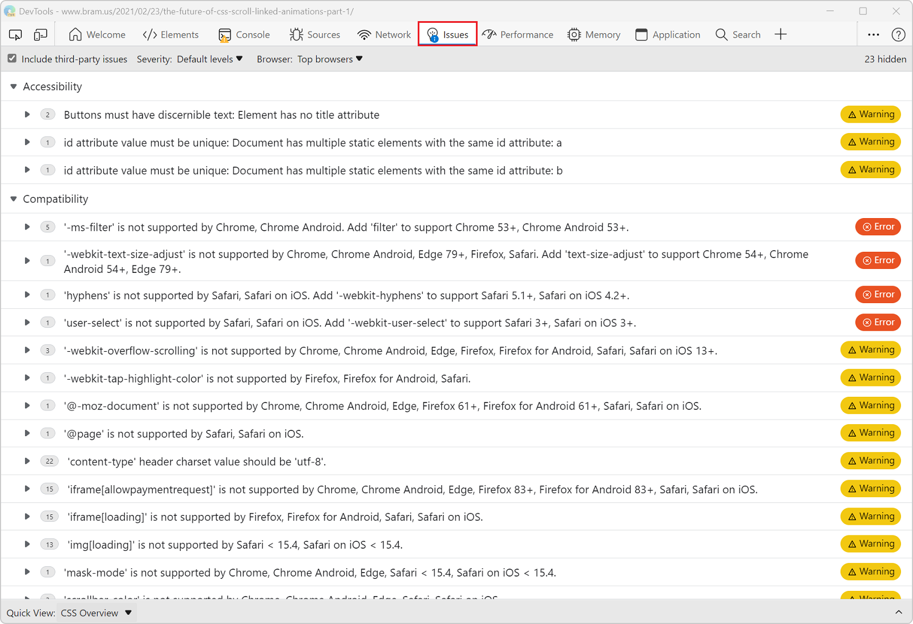
Edge has a very useful Issues panel that can automatically list a lot of different issues with your site. It can detect common issues related to browser compatibility, accessibility, performance, secu... Read moreCategories: Supported by:
-
Take a screenshot of part of a webpage from the Command Menu
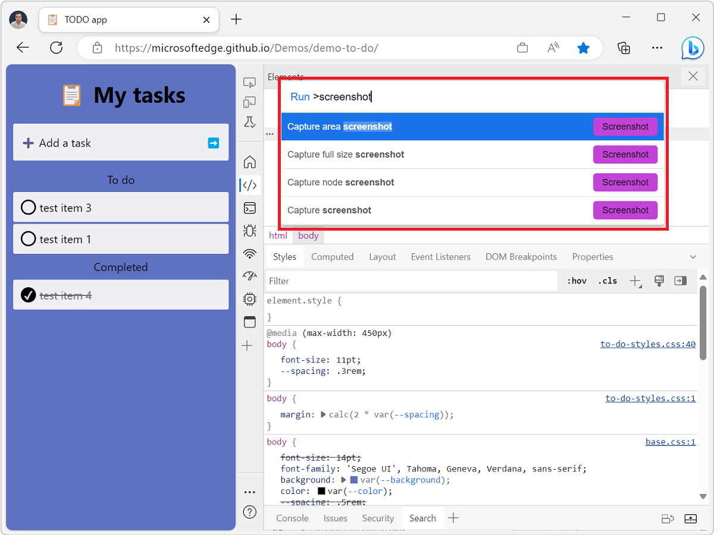
The Command menu in Edge and Chrome is a great way to do many of the things you can do in DevTools without having to navigate the UI. Csaba Kissi shared a great tip on Twitter about the Command menu:... Read more
-
Quickly reference React components in the console
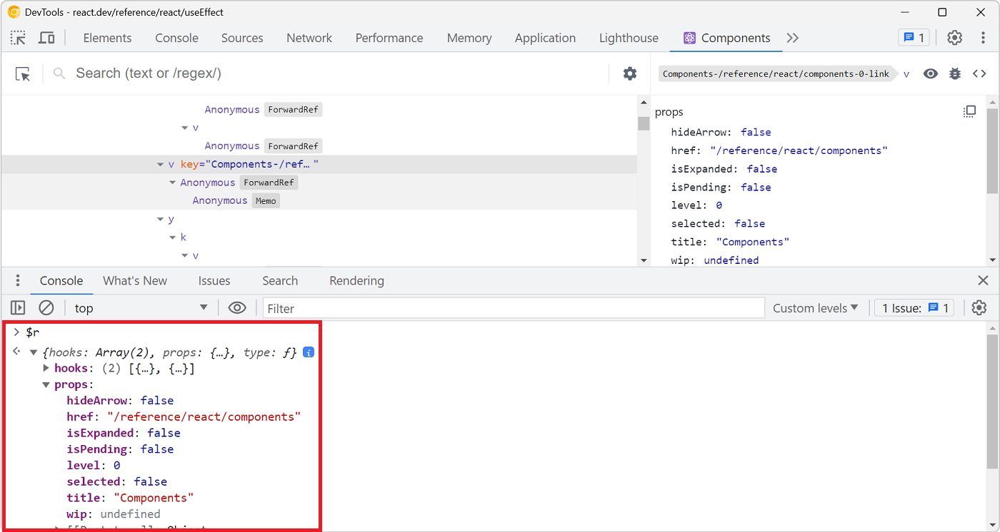
Zee shared a great tip on Twitter if you are working with React and have the React DevTools extension installed. You can use $r in the Console tool to reference the currently selected element in the R... Read more
-
Start your HTML and CSS prototypes in the browser directly
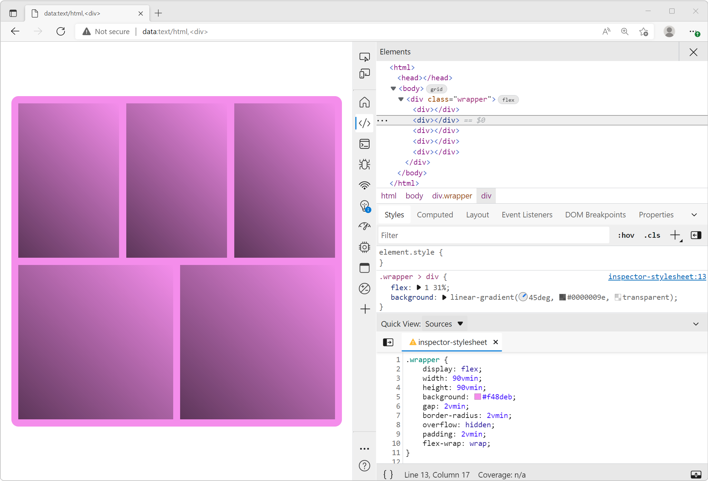
Sometimes I need a blank canvas to prototype an idea with HTML and CSS. Something outside of the website I'm working on. Maybe I need a new layout or component and I'm not sure yet how to do it. In th... Read more
-
Fix low color contrast issues
 With DevTools you can detect low color contrast issues which is great. But Chrome DevTools, Edge DevTools, and Polypane, you can go one step further and fix these issues directly! In Chrome and Edge #... Read more
With DevTools you can detect low color contrast issues which is great. But Chrome DevTools, Edge DevTools, and Polypane, you can go one step further and fix these issues directly! In Chrome and Edge #... Read more -
Debug popups that appear on hover using the debugger statement
In Debug popups that appear on hover using JS we described how to pause the debugger to inspect popups that appear on hover and disappear as soon as the cursor moves away. Here's another way to do thi... Read more
-
console.log() is great, but do you know console.table()? console.group()? console.assert()?
 You probably know about console.log() already, it's a great way to print variables and objects to the console while the code is running, to debug it. But there are other console methods that can help... Read more
You probably know about console.log() already, it's a great way to print variables and objects to the console while the code is running, to debug it. But there are other console methods that can help... Read more -
Debug CSS grid areas
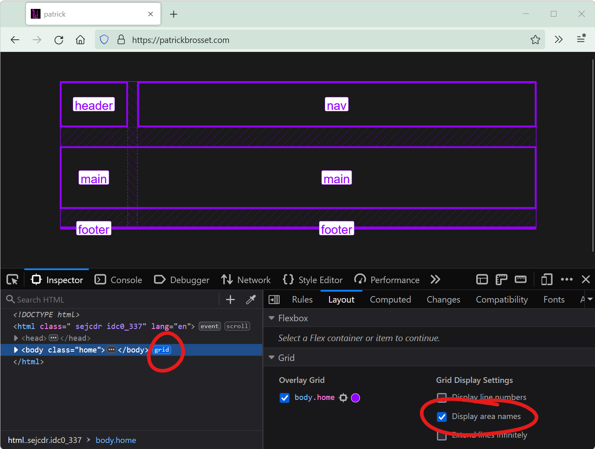
A really useful way to position elements on a CSS grid is using the grid-template-areas property. With it, you can give names to various areas of your grid (potentially spanning multiple cells), and t... Read more
-
Emulate forced-color mode
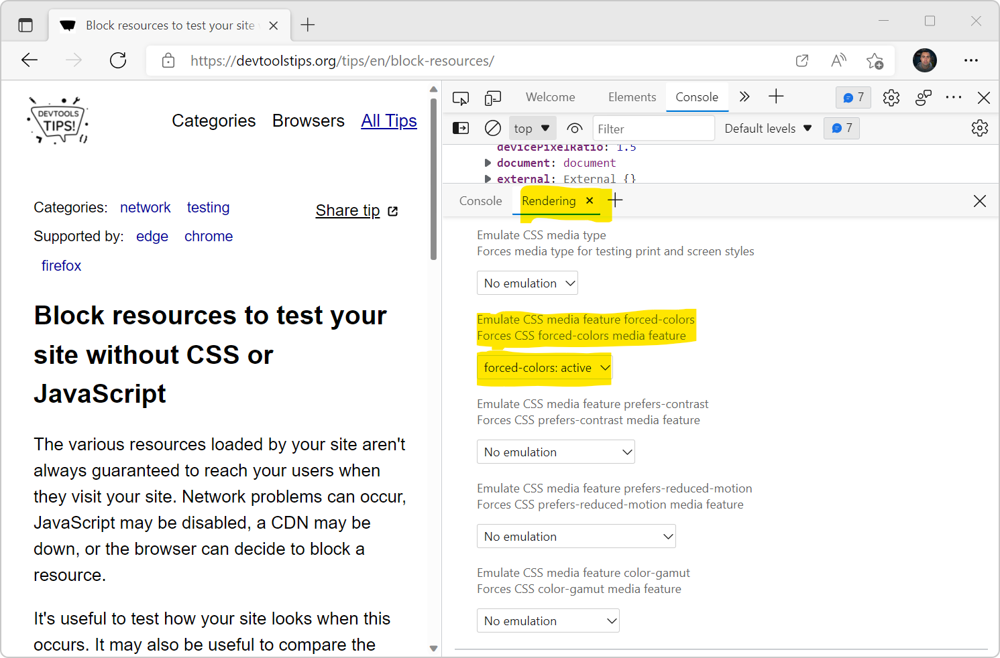
Operating systems offer an accessibility feature where the colors shown on the screen are converted to offer higher contrast. When you use this feature, it impacts all the content on the screen: your... Read more
 firefox
firefox
 edge
edge
 chrome
chrome
 polypane
polypane
 safari
safari